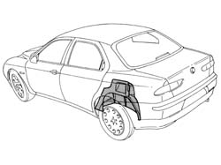
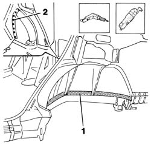
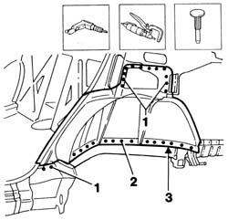
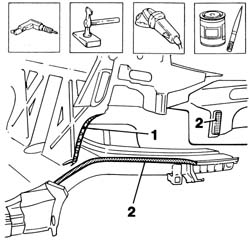
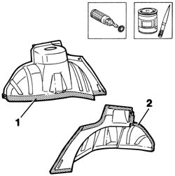
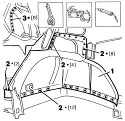
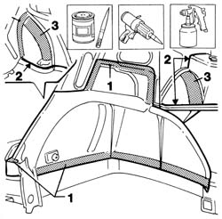

7210B40 R.R. REAR WHEEL ARCH LINER
- Path
- Procedures > 72 PANELS AND FRAME > 7210 REMOVING REFITTING > 7210B structure elements-central and rear part > 7210B40 R.R. REAR WHEEL ARCH LINER
- Kind
- repair procedure (removal / refitting; the operation number is the code)
- Applies to
- all engines; all production periods
- Interactive page
- https://sloeber94.github.io/elrnDB-a156/en/#/3239035
Applies to: all engines; all production periods
 Removing
Removing
 Refitting
Refitting7210B35 R.R. REAR OUTER WHEEL ARCH .
Check if any of the connected parts are deformed by checking body alignment dimensions. Use appropriate measurement tools (reference rigs, templates or gauges).
Straighten the body if necessary.

Applies to: all engines; all production periods
1. Remove the PVC treatment from the door sill to expose the spot welds using a vibrating cutter and appropriate blade.
2. Drill out weld points in the areas shown in the figure.

Applies to: all engines; all production periods
1. Use a chamfering machine to crop the weld spots indicated in the figure.
2. Drill out spot welds in the areas shown in the figure.
3. Use a chisel and mallet to remove the inner wheel arch.

Applies to: all engines; all production periods
1. Make equidistant holes as shown in the figure.
Straighten the panel edges using a mallet and profiled stake.
Use a grinding wheel to remove the weld spot residues.
2. Apply electroweldable paint finish to the panel edges shown in the figure.

Applies to: all engines; all production periods
1. Working at the bench, use a rotary brush to remove the corrosion-proofing from the panel edges shown in the figure.
2. Apply electroweldable paint finish to the panel edges shown in the figure.

Applies to: all engines; all production periods
Refitting
Removing1. Position the part on the car and secure using self-locking clips.
2. Use a spot welder to weld the roof panel in the areas shown in the figure.
3. Use a MIG welder to fill the holes made previously.

Applies to: all engines; all production periods
1. Apply rust-proofing to newly-welded areas.
2. Seal the areas indicated in the figure.
Restore the PVC treatment.
3. Apply sound-deadening panels.
Apply paint.

Applies to: all engines; all production periods